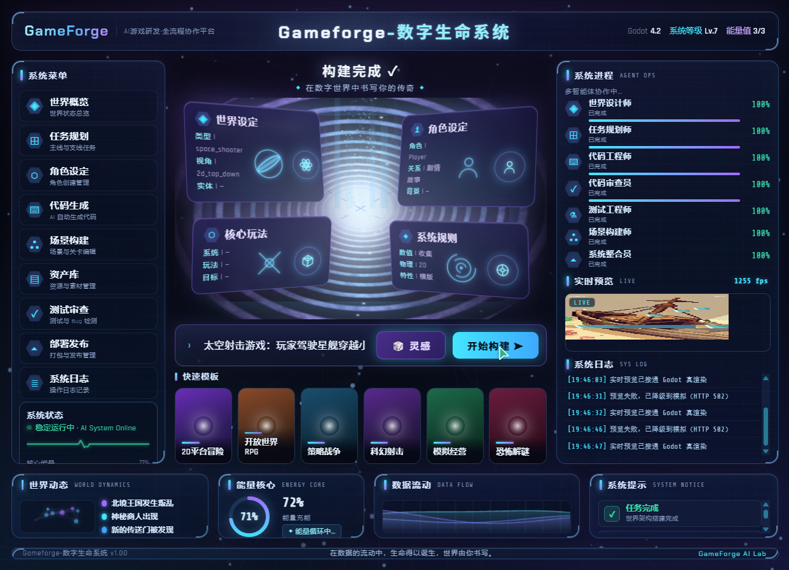
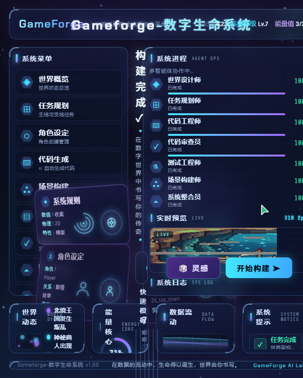

| 项目 | 内容 |
|---|---|
| 测试需求 | 「太空射击游戏：玩家驾驶星舰穿越小行星带，对抗外星无人机舰队，收集能量核心升级武器，Boss战每三波出现一次，像素风」 |
| 入口 | 浏览器访问 http://127.0.0.1:8000/（数字生命系统驾驶舱 UI），输入需求 → 开始构建 |
| 第 1 轮（16:17） | 复用既有项目目录（上一轮"深海"需求残留内容） |
| 第 2 轮（19:40） | 隔离变量：将旧项目目录备份为 GameForge_Project.bak_ocean，从零验证全新生成路径 |
| 取证手段 | 服务端结构化日志、产物文件时间戳/行数比对、UI 实时预览截图、导出 API 实测、gd-guard / baseline_checker 门禁日志 |
P0无论提交什么需求，产物永远是同一个"海洋主题平台跳跃游戏"。两轮独立测试均复现。
space_shooter，但实测预览画面为木质帆船 + 天空/海面背景的横版平台游戏（见下方截图）；2026-09-01 19:41:58 [info] art_director.llm_plan slots=9 theme='深海 珊瑚 沉船' 2026-09-01 19:42:29 [info] asset_forge.done assets=['background','decoration','enemy','enemy2','enemy3','ground','icon','npc','pickup','platform','player'] ×7（并发重复，见 P1-3）
main.tscn 与上一轮"深海"项目的场景文件行数完全一致（553 行），均为同一硬编码模板；audio_engine.using_ai backend=musicgen genre=platformer——音乐类型也是硬编码的 platformer。scene_build_skipped reason=auto_build_scene_disabled（godot.auto_build_scene=false）——正确的 shooter 场景 IR 没有任何代码把它写入磁盘/api/v1/preview/frame；发现 main.tscn 缺失即自动建项目——写死 default_scene_ir(theme="sky_blue", genre="platformer")（src/api/main.py:933）

.gameforge/scene_ir.json），禁止硬编码 genre/theme；② 工作流侧将 scene_generator 的 IR 真正写入项目（或开启 auto_build_scene）；③ art_director 主题匹配改为"需求关键词 → THEME_PACKS 加权匹配"（太空/星舰/小行星应命中现成的 space_night 星舰 星云 小行星 包，目前该包完全未被使用）。P07 个 Agent 进度条全部 100%，但对最终可玩产物贡献为零。
any(k in gdm for k in ("game_title","genre","core_loop","entities")) 过宽——只要含 genre 即放行，缺字段由 normalize 填默认值「未命名游戏」；task_plan_generated_from_gdm task_count=1），代码生成最终产出 0 个 .gd 脚本（gd_guard 扫描结果 {'gd': 0, 'tscn': 1, 'project_godot': 1}）；19:41:44 [info] agent_action action=using_gdm_for_planning title=未命名游戏 19:41:44 [info] agent_action action=task_plan_generated_from_gdm task_count=1 19:47:46 [info] gd_guard.allow scanned={'gd': 0, 'tscn': 1, 'project_godot': 1} 19:47:46 [info] baseline_checker.passed checks=15
250ms 高频轮询下，多个并发 /preview/frame 请求同时发现 main.tscn 缺失，各自触发完整的资产管线（AI 生图 11 张 + SFX 5 段 + BGM）。单项目锁未覆盖生成全程：
19:42:29 asset_forge.done ×7 ← 同一秒 7 个并发构建全部完成全套资产生成 19:42:29 sfx_forge.done ×7 19:42:29 preview.scene_auto_generated ×7 19:42:32/43/46, 19:43:33 … ← 后续又有 4 轮，累计 ~11 次完整生成
health_status_502 反复重启进程（日志中同一项目 spawn 10+ 次）；_pick_free_port 从 8769 起探测空闲端口，进程退出后端口被释放，另一项目立即抢占——第 1 轮观测到 demo_jump_v2 与 GameForge_Project 同时被分配到 8770，互相冲突崩溃；导出 API 实测返回 release_gate_failed，两类错误：
ERROR: …scenes/main.tscn'. at: instantiate (scene/resources/packed_scene.cpp:211) ← 场景实例化失败 ERROR: [screenshot_server] listen failed on 127.0.0.1:8769 err=22 ← 冒烟实例与常驻预览抢同一端口
GAMEFORGE_PREVIEW_PORT（或临时移除 screenshot_server autoload），与常驻预览进程隔离；排查 headless 冒烟下场景实例化失败的具体资源依赖。audio_engine.loading backend=musicgen 后进程级崩溃（exit code 1）。Python 层 fallback 无法兜住原生库段错误，音频模型加载应移出 API 进程（子进程/独立服务）；| 优先级 | 缺陷 | 建议动作 | 预估工作量 |
|---|---|---|---|
| P0 | 需求-产物脱节（§三） | 预览兜底读工作流 IR；scene IR 落盘；art_director 按需求关键词匹配主题包 | 1–2 天 |
| P0 | 工作流空转（§四） | GDM 质量门禁 + 带反馈重试；产物为零时流程显式失败 | 0.5–1 天 |
| P1 | 并发重复生成（§五） | 项目级互斥标记，轮询等待/复用 | 0.5 天 |
| P1 | 端口竞态与崩溃循环（§五） | 端口确定性分配 + 健康重启阈值 | 0.5 天 |
| P1 | 导出门禁端口冲突（§五） | 冒烟实例端口隔离 | 0.5 天 |
| P2 | 缓存失效 / 音频进程隔离等（§六） | 需求哈希进缓存键；MusicGen 移出 API 进程 | 1 天 |
job-b430a45133f3462c9ca3528f6c563f84（第 2 轮）/ job-ea103218c72048cfb9d2d656c0fbc2b4（第 1 轮）projects/GameForge_Project（本轮）/ projects/GameForge_Project.bak_ocean（隔离备份）docs/quality-assets/run2-final-ocean-preview.jpg、run3-final-ship-preview.jpgsrc/api/main.py:933；场景构建跳过 src/agents/scene_generator/__init__.py:69；GDM 校验 src/agents/game_designer/__init__.py:69；主题包 src/agents/genre_fusion.py:60；端口探测 src/engine/godot/supervisor.py（_pick_free_port）